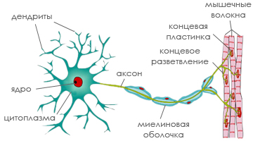

Нервная система
В нервной системе кошек электрические импульсы передаются по нервным волокнам, отдавая команды соответствующим органам. Для связи между нервными клетками различных органов для их координации, используются также и химические процессы. Нервная система кошки представляет собой очень сложную сеть.

У млекопитающих, нервная система состоит из нескольких сегментов. Центральная нервная система включает в себя головной мозг, мозговой ствол и спинной мозг. Периферическая нервная система включает в себя нервы, выходящие из мозга в область головы и шеи, а также нервы, находящиеся на входе и выходе из спинного мозга. Эти нервы передают сигналы центральной нервной системы другим органам тела, например, лапам и хвосту. Нервные импульсы из головного мозга проходят через спинной мозг и периферические нервы, в ткани тела кошки и тем же путем возвращаются обратно, сообщая мозгу информацию от всех частей тела.
Периферические нервы, выходящие из головного и спинного мозга, называют двигательными нервами. Эти нервы управляют мышцами, обеспечивая возможность движения, пребывания в определенных позах и рефлекторные реакции. Периферические нервы, передающие сигналы в головной и спинной мозг, называют сенсорными нервами. Они доставляют информацию (такую, как чувство боли) от органов тела в центральную нервную систему.
Другие группы нервов образуют вегетативную (автономную) нервную систему. Вегетативная нервная система содержит нервы, которые контролируют непроизвольные движения органов, таких как кишечник, сердце, кровеносные сосуды, мочевой пузырь и т.д. Кошка не может сознательно управлять органами через вегетативную нервную систему, они функционируют "автоматически".
При рождении нервная система котят еще не вполне сформирована. Головной мозг, спинной мозг и связанные с ними нервы присутствуют при рождении, но не имеют возможности адекватно и скоординировано передавать электрические импульсы. По мере развития нервной системы в первые недели жизни, количество и длительность сознательных, контролируемых движений значительно возрастают. В первую неделю жизни котенок мало на что способен, он только спит и ест. Некоторая беспорядочная двигательная активность, наблюдается даже тогда, когда, казалось бы, котенок крепко спит. Во вторую неделю жизни, котенок по-прежнему тратит много времени на сон, но при этом сон становится спокойнее, с меньшим количеством непроизвольных движений. Во время пробуждения, котята, как правило, кормятся. К концу третьей недели большинство котят могут довольно длительное время поддерживать вертикальное положение и, бодрствуя, проводят гораздо больше времени. Котята пытаются перемещаться, загребая лапами, так как еще не могут полноценно стоять и ходить. Первые попытки ходьбы, как правило, короткие, так как мышцы ещё не обладают достаточной силой. После трех недель, котята уже могут стоять, и совершать прогулки на короткие расстояния. В течение нескольких последующих недель котенок становится достаточно мобильным, может ходить и даже бегать, хотя и несколько неуклюже.
Котята рождаются с закрытыми веками. К двум неделям глаза открываются, но глазное яблоко обладает лишь малой чувствительностью к свету. К трем-четырем неделям котята уже обладают зрением, но полностью оно формируется только после десяти недель жизни.
Котята рождаются глухими. Подобно глазным векам, слуховые каналы остаются закрытыми примерно до двухнедельного возраста. В две недели большинство котят могут различать некоторые шумы. К этому времени они уже пугаются резких звуков. К четырём неделям звуки уже не пугают котят, слух полностью сформирован.
Все вышеописанные способности - движение, слух и зрение, обеспечиваются нервной системой кошки. Названные сроки, являются средними - точный возраст, в котором эти способности полностью развиваются, конечно, указать невозможно.
Заболевания нервной системы могут возникать в результате неправильного развития нервной ткани и связанных с ней органов, либо от повреждений из-за травм или инфекционных болезней. Многие заболевания нервной системы кошек имеют генетическое происхождение.
Нервная система состоит из нервных клеток нейронов и поддерживающих их клеток, которые производят миелин. От тела нейрона отходят веточки - дендриты, которые получают информацию от других клеток. У каждой клетки есть еще и один длинный отросток - аксон, посылающий сообщения другим нервным клеткам или непосредственно органам. Все эти сообщения переносят нейромедиаторы, или трансмиттеры - химические вещества, вырабатываемые в аксонах. Нервная система кошки постоянно передает и получает огромное количество сообщений. Каждая клетка посылает сообщения тысячам других клеток.
Миелин - это жировая защитная мембрана, покрывающая наиболее крупные аксоны и увеличивающая скорость передачи сообщений между нервами. Нервное волокно состоит из аксона, миелиновой оболочки и клетки, которая вырабатывает миелин. Миелин вырабатывается в центральной нервной системе клетками, которые называются олигодендроцитами, а также в периферической - нейролеммоцитами. Немногие нервы имеют миелиновую оболочку при рождении, но у котят нервы миелинизируются быстро и очень эффективно.